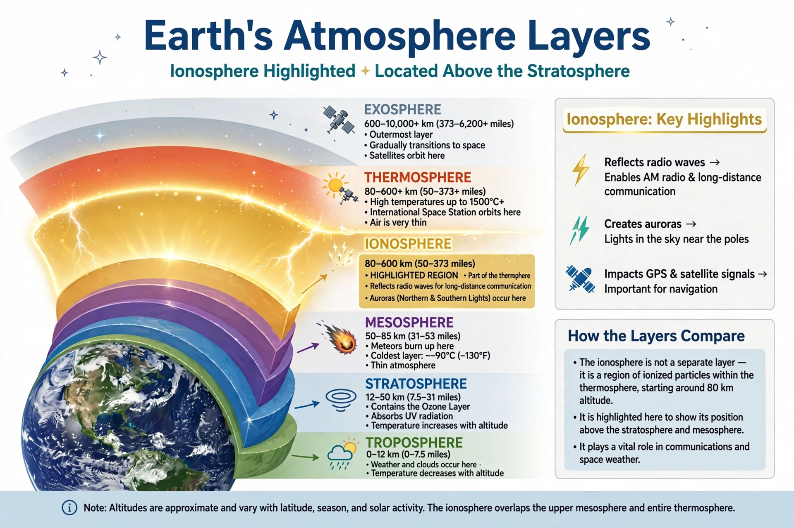

| Ionosphere | |
|---|---|
| Altitude | About 60–1,000 km above Earth's surface |
| Cause | Ionisation of upper-atmosphere gases by solar extreme ultraviolet and X-ray radiation |
| Layers | D, E, F (F1 and F2) |
| Effects | Reflects shortwave radio; auroras; affects satellite signals |

The ionosphere is the ionised part of Earth's upper atmosphere, extending from about 48 km (30 mi) to more than 1,000 km altitude, including parts of the mesosphere, thermosphere and exosphere. Ionisation is produced mainly by solar extreme ultraviolet radiation and X-rays, which knock electrons from neutral atoms and molecules, creating a plasma of ions and free electrons.
The ionosphere is conventionally divided into the D layer (60–90 km), which absorbs high-frequency radio waves by day and disappears at night; the E layer (90–150 km), responsible for sporadic reflections; and the F layer (150 km and above), which splits into F1 and F2 during the day. The F2 layer, the densest, is the principal reflector for long-distance shortwave radio.
By reflecting high-frequency (HF) radio waves, the ionosphere enables over-the-horizon communication used by broadcasters, amateurs and militaries. It also influences satellite navigation signals such as GPS, hosts the aurora borealis and aurora australis where charged particles excite atmospheric gases, and varies strongly with the solar cycle, day and night, season and geomagnetic storms. Ionosondes and satellites continually monitor its state.